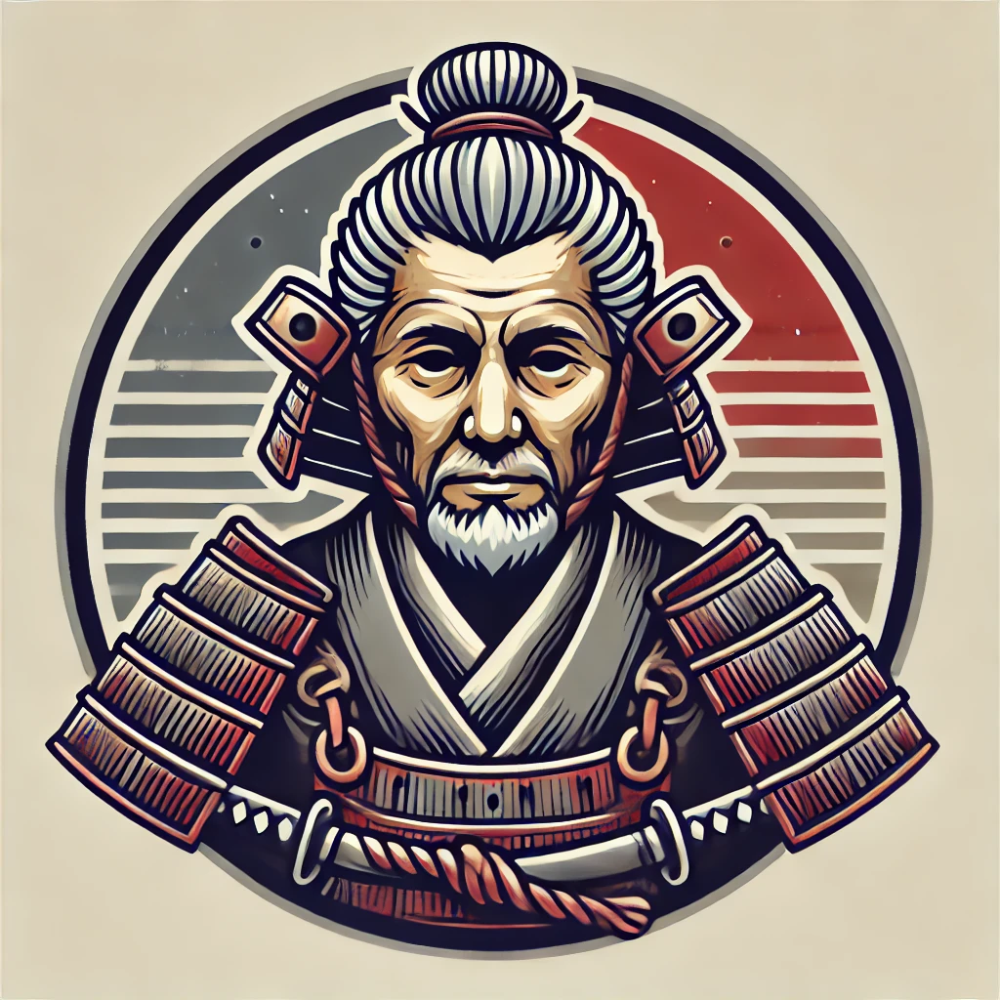
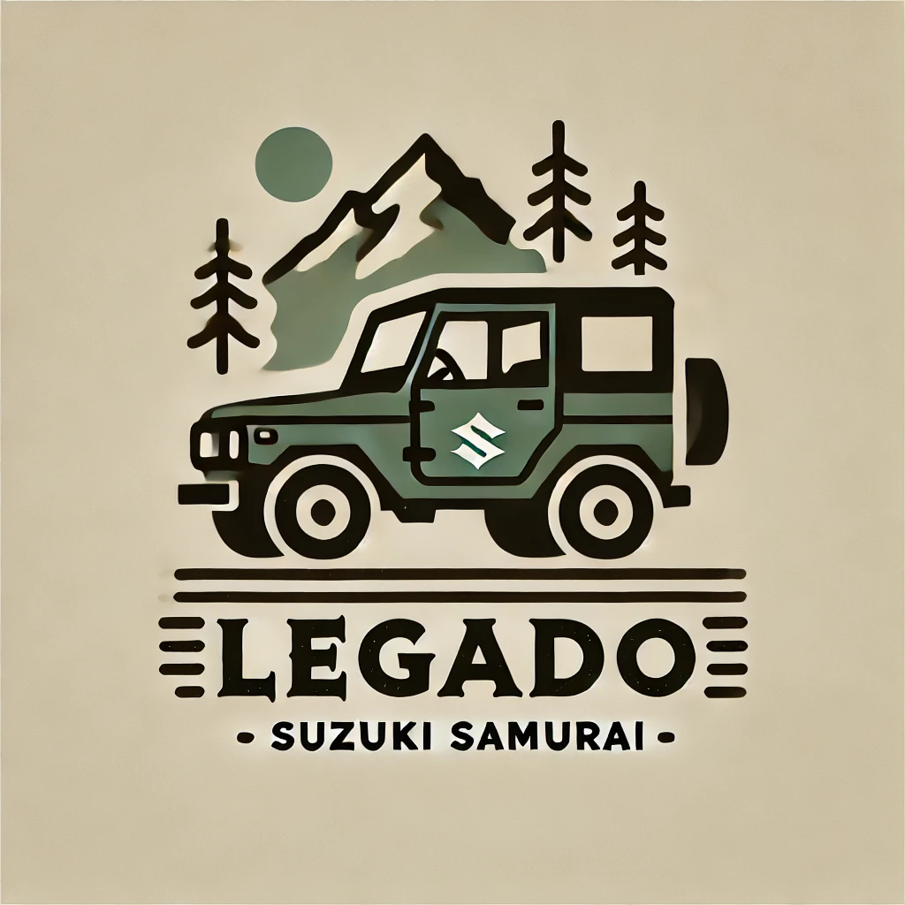

¡Bienvenidos a tu punto de encuentro !
Club de Aficionados Suzuki Samurai
! 🚙
Historia

Empezamos por sus orígenes. En los años 60, Suzuki ya estaba experimentando con vehículos compactos todo terreno. El primer modelo que lanzaron fue el Suzuki LJ10 en 1970, un vehículo ligero y pequeño, perfecto para los caminos rurales de Japón. Tenía un motor de 2 cilindros y 359 cc que no llegaba a los 30 caballos, pero su tamaño compacto y peso ligero lo hacían una máquina ágil y capaz en terrenos difíciles. Con el tiempo, Suzuki fue mejorando su diseño, y de esta línea nació finalmente el Samurai. En 1981, Suzuki lanzó la versión SJ, que fue la base de lo que luego conoceríamos como el Suzuki Samurai. Pero el Samurai, con nombre oficial Suzuki SJ410 en Japón y SJ413 en algunos mercados, no llegó hasta 1985 a los Estados Unidos y otros países, ¡y allí causó una revolución! Venía equipado con un motor de 1.3 litros, un verdadero avance en potencia para un vehículo de su tamaño. Aunque tenía solo 63 caballos, su peso ligero y su sistema 4x4 con una suspensión increíblemente resistente lo hacían un guerrero en terrenos difíciles, rivalizando incluso con vehículos mucho más grandes y pesados. Lo que me fascina del Samurai es que es una especie de “underdog”, ¿sabes? No necesitaba mucho para enfrentarse a cualquier terreno. A pesar de que algunos lo llamaban “lento” y hasta lo criticaban por su sencillez en carretera, para quienes amamos la aventura, el Samurai ofrecía algo único. Era fácil de reparar, y con su chasis de caja escalonada, era casi indestructible. Si algo se rompía, con un poco de ingenio y unas herramientas, podías seguir adelante. Era ese tipo de coche que te permitía explorar sin preocuparte por quedarte tirado. En los 80 y 90, los Samurai se volvieron muy populares en zonas rurales, en montañas, y entre los jóvenes aventureros. ¡Esos techos desmontables le daban un aire de libertad! No tenía lujos, pero ese era el encanto. Te daba todo lo que necesitabas y nada de lo que no necesitabas. Claro, no toda la historia es de rosas. A finales de los 80, el Suzuki Samurai enfrentó una dura polémica en Estados Unidos. La revista Consumer Reports publicó un artículo afirmando que el Samurai tenía una alta probabilidad de volcarse en maniobras de emergencia, lo cual dañó mucho su reputación. Suzuki luchó durante años contra estas acusaciones, argumentando que el Samurai era seguro si se conducía como un todoterreno. Sin embargo, esto marcó el comienzo del fin de su tiempo en Norteamérica. Pero, ¿sabes qué? Esta controversia también consolidó su lugar como un ícono de culto entre los entusiastas. Hoy en día, el Suzuki Samurai sigue vivo en el corazón de muchos de nosotros, los fanáticos del off-road. Ver uno es como encontrarte con un amigo antiguo: uno que tal vez no es el más rápido ni el más elegante, pero que nunca te va a fallar cuando las cosas se ponen difíciles.
Curiosidades
¡El Suzuki Samurai tiene anécdotas asombrosas! Para empezar, ha conquistado el Himalaya, ¡sí, el pequeño Samurai ha sido usado en expediciones extremas en las alturas, donde otros vehículos no logran llegar! Además, algunos fanáticos lo han convertido en vehículos anfibios, colocándole flotadores para cruzar cuerpos de agua; un verdadero todoterreno, ¡incluso en el agua! En Islandia, los Samuráis son muy valorados para explorar glaciares y terrenos volcánicos. Allí los modifican con enormes llantas y suspensiones especiales para deslizarse sobre nieve y hielo. Y, claro, ¡también dejó su huella en el Dakar! Aunque no fue diseñado para esas condiciones extremas, compitió en el rally y demostró ser un guerrero resistente. Además, el Samurai es perfecto para off-road extremo. Los fanáticos lo modifican con motores turbo y ejes de camiones, llevándolo a competir en rutas extremas. Ver uno subiendo rocas o cruzando ríos da un orgullo especial; es como ver a un pequeño David venciendo a un Goliat en el mundo del todoterreno.
Legado
El legado del Suzuki Samurai es casi mítico para quienes lo conocemos y amamos. No es solo un coche, es un símbolo de libertad y aventura. Este pequeño todoterreno, con su diseño compacto y chasis resistente, nos invita a explorar más allá de los caminos asfaltados y a descubrir lugares salvajes y desconocidos. Su grandeza no está en el tamaño ni en la potencia, sino en su espíritu indomable. Más que un vehículo, es un "compañero fiel" que nunca te abandona y una fuente de inspiración para quienes buscan la aventura. Su verdadero legado es esa mezcla de exploración, camaradería y valentía, que nos recuerda que las mejores rutas son las menos transitadas.
Galeria de fotos gentileza de amigos